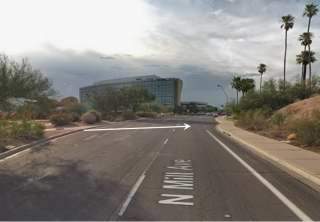

|
 previous / next column previous / next column
A PHYSICIST WRITES . . .
(January 2019)
While you are perhaps still trying to keep to your new-year resolutions, in this month's column I shall attempt some old-year ones - by which I mean following up various topics I discussed last year and hoping to round them off. Though as I start to think about them, I'm realizing that some have not yet reached 'resolution'!
In April I told the story of a coach crash (in 2012) caused by the failure of a 19-year-old tyre. The mother of one of the two young passengers who were killed persuaded Maria Eagle MP to take an interest, and late in 2017 she introduced a Ten Minute Rule Bill in Parliament to ban coach tyres over ten years old.
I said the Bill was to have a second reading on 27 April. However, on that day discussion of it was put off to June - and from then to July, to October, to November, and (finally?) to late in this month, January. So watch this space. But really, what a way to run a country! (And I say that without even lifting my eyes higher than this Bill...)
In May I reported that police forces in Wales were inviting motorists to send in dash-cam recordings of other drivers' misdemeanours (on the move, that is, not simply bad parking). I have read since that as a result, in less than two years there were 38 prosecutions, 28 fixed penalties and 86 instructions to drivers to attend 're-education' courses. Quite a successful exercise, then (and I wonder if there has been any reoffending?).
Meanwhile, around the middle of last year the scheme - now masterminded by Nextbase, though other makes of dash-cam are available - was extended to the whole of England. And I might mention that any source for the video is acceptable, not just from a dash-cam.
To reach the webpage for reporting what you have observed to the local police force, just google Nextbase Incident (though you will find that not every force is using Nextbase's incident-submission form yet). But do remember that your own driving behaviour may be assessed too, from whatever the police can see on the recording you send to them...
Let's return to another sad story, the case of the lady who was crossing a road in Arizona, at night-time, when she was hit by a Uber auto(nomous) test-vehicle: in my July column I described briefly what had happened. A reader then drew my attention to a preliminary report on the incident. More details emerged later, and I also captured a Google Street View of the location, a dual carriageway which the victim was crossing from the central reservation, as I've indicated with an arrow.

The centre strip is wide at this point, and landscaped with what look like paths across it. However, they are clearly marked with Do Not Cross Here signs, facing outward across each carriageway and pointing to a safe crossing-point only 120 metres away at a junction. Or at least, the signs are clear to pedestrians in daylight - but after dark? I would say that the sign the lady would have faced in getting on to the central reservation was too small, and too far from lighting, to be easily seen.
On the other hand, even though (or even because) she was reportedly homeless, you might expect her to have known the area. But other cards were stacked against her. She was in dark clothing, she wasn't near a street-lamp on this side either, and she was wheeling a bicycle that didn't have side reflectors. She had drugs in her body (though these were not necessarily affecting her at the time), and evidently she did not see or hear the auto as it approached. Also, the back-up driver inside the vehicle was looking at a TV show on her phone, in the run-up to the accident...
This lady (the one in the auto) didn't hit the brake pedal until just after the collision. And as I said in July, the built-in emergency braking was disabled: this was normal procedure in auto-mode, because otherwise progress could be erratic! As for the on-board 'radar' system, this detected something in the road only six seconds before impact, identifying it first as an unknown object, then as a vehicle, and then finally as a bicycle.
The auto slowed meanwhile from 43 to 39 mph (this was in a 45 mph zone), though my guess is that the main reason was the approaching junction. At just five metres' separation from the lady and bicycle, the system registered that emergency braking was needed, but of course it didn't happen, nor was the driver alerted automatically.
So the autonomous vehicle failed to react usefully, the back-up driver (who was supposed to be ready to take control at any time) failed totally, and the victim apparently failed herself by jay-walking in the dark - though this really shouldn't be punishable by death. Nine months on, Uber has just restarted testing (in Pittsburgh, not in Arizona) with two drivers on board each auto, and emergency braking activated. The test routes are restricted to roads with 25 mph limits. All the circumstances of this tragic accident suggest that self-driving technology is far from fully viable yet.
Now, I wonder if you are wondering how I'm getting on with my smartphone. I told you last July that I had acquired it in between two stays in hospital, for keeping in close touch with my extended family via the WhatsApp app. Well, this aim was highly successful, and has been ever since!
Other software that I've installed includes the Reading Buses app which cleverly shows exactly where my local bus is, on a map of its approach route, so that I don't have to go out and wait for it in the cold longer than necessary. What I think this app is lacking, though, is a communication link back to the driver, which I could have made good use of the other day (heading for home from hospital) when I arrived within sight of the stop just as the bus was moving off.
I've found too that hospitals offer wi-fi connection - helpfully, as I'm still visiting the Royal Berks once a week for chemotherapy. (One benefit of this treatment, I'm half-certain, is that my ears are making less wax, hence my hearing has improved!) The chemo ends next month: I then cross my fingers, hoping that my own case has reached a resolution...
Peter Soul
previous / next column
|